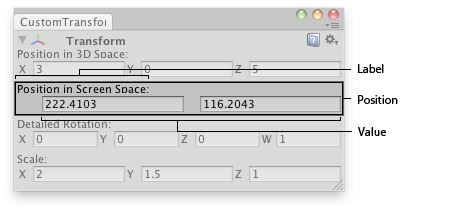

EditorGUI.Vector2Field
Parameters
| position | Rectangle on the screen to use for the field. | |
| label | Label to display above the field. | |
| value | The value to edit. |
Returns
Vector2 The value entered by the user.
Description 描述
Makes an X and Y field for entering a Vector2.

Vector2 field in an Editor Window.
using System.Collections; using System.Collections.Generic; using UnityEngine; using UnityEditor;
// Editor window that shows the detailed rotation (X,Y,Z and W components), // the position in 3D space and position in Screen space of the selected // transform.
class CustomTransformInspector : EditorWindow { bool showing = true; Vector4 rotationComp;
[MenuItem("Examples/GameObject detailed inspector")] static void Init() { CustomTransformInspector window = (CustomTransformInspector)EditorWindow.GetWindow(typeof(CustomTransformInspector)); window.Show(); }
void OnInspectorUpdate() { Repaint(); }
void OnGUI() { var currObj = Selection.activeTransform;
showing = EditorGUI.InspectorTitlebar(new Rect(0, 0, position.width, 20), showing, currObj, showing); if (showing) { if (currObj) { currObj.position = EditorGUI.Vector3Field(new Rect(3, 15, position.width - 6, 20), "Position in 3D Space:", currObj.position);
EditorGUI.Vector2Field(new Rect(3, 50, position.width - 6, 20), "Position in Screen Space:", Camera.main.WorldToScreenPoint(currObj.position));
rotationComp = EditorGUI.Vector4Field(new Rect(3, 85, position.width - 6, 20), "Detailed Rotation:", QuaternionToVector4(currObj.localRotation)); currObj.localRotation = ConvertToQuaternion(rotationComp);
currObj.localScale = EditorGUI.Vector3Field(new Rect(3, 120, position.width - 6, 20), "Scale:", currObj.localScale); } else { EditorGUI.DropShadowLabel( new Rect(3, 15, position.width, 20), "Select an Object to inspect"); } } }
Quaternion ConvertToQuaternion(Vector4 v4) { return new Quaternion(v4.x, v4.y, v4.z, v4.w); }
Vector4 QuaternionToVector4(Quaternion q) { return new Vector4(q.x, q.y, q.z, q.w); } }